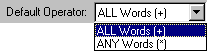

2.3 The Default Operator
By default, the Default Operator is set to "All Words (+)".

This means that any keyword you enter without a search operator, is treated as a
mandatory keyword. For example, entering "ignition coil" as search words, will only return
threads that contain both words. In other words, the results are the same as when
you enter "+ignition +coil".
If you change the Default Operator to "Any Words (*)", keywords are treated as
optional keywords. The same search for "ignition coil" will return all threads containing
either "ignition", "coil" or both words. In other words, the results are the same as when
you enter "*ignition *coil".